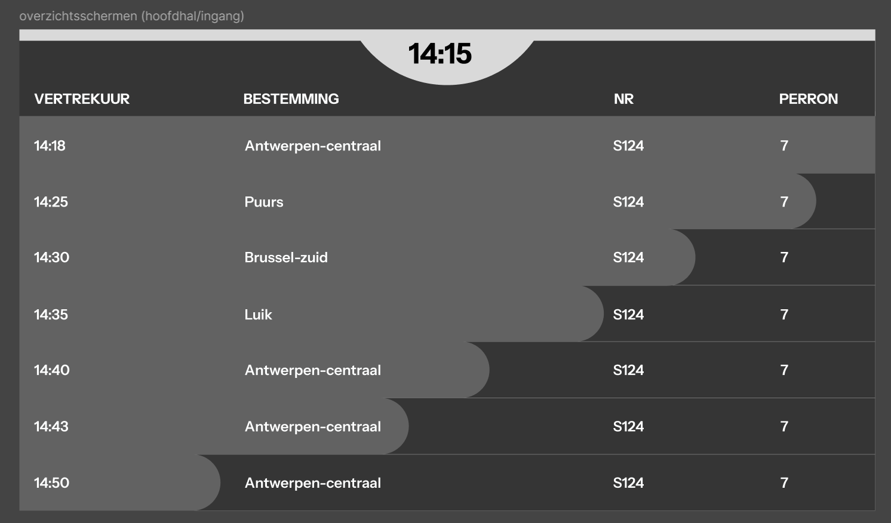
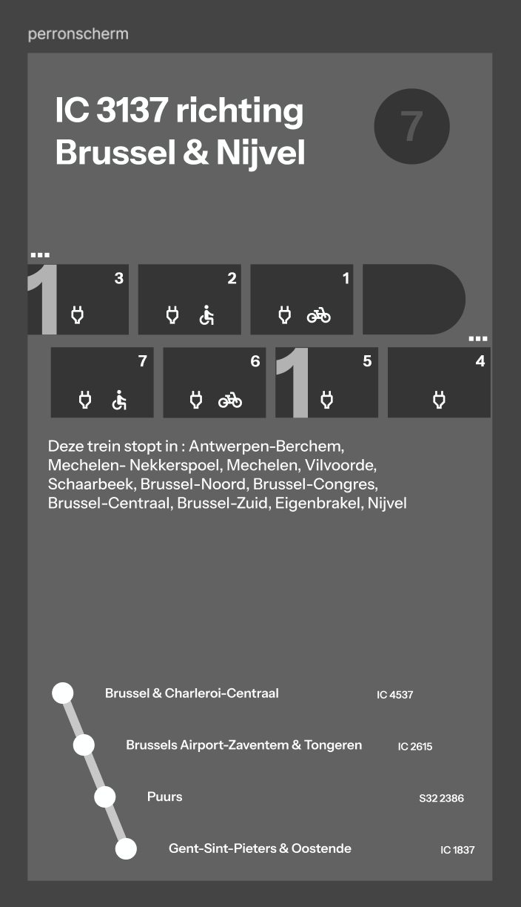
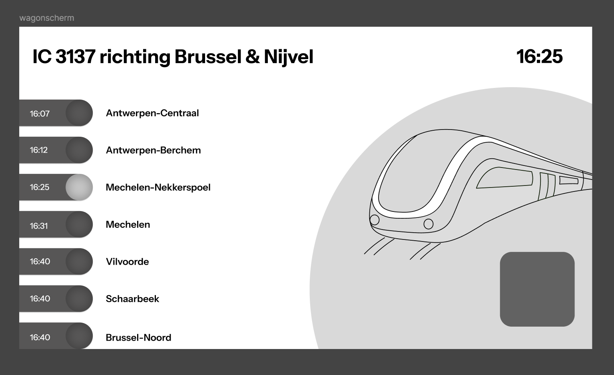

Week 3
Mid-fi prototype in Figma
Liv De Loecker 1GDM2
⬅ Terug naar homepage
In week 3 moesten we onze schetsen overzetten naar Figma. Dit werd dan ons mid-fi prototype.
Ik ben begonnen met het juist instellen van alle afmetingen en het aanmaken van de verschillende selecties
per scherm. Daarna ben ik gestart met het digitaliseren van mijn schetsen.
Tijdens het werken in Figma merkte ik dat sommige onderdelen toch niet zo gebruiksvriendelijk waren als ik
dacht, dus heb ik hier en daar nog wat aanpassingen gedaan om het geheel duidelijker en makkelijker in
gebruik te maken.


